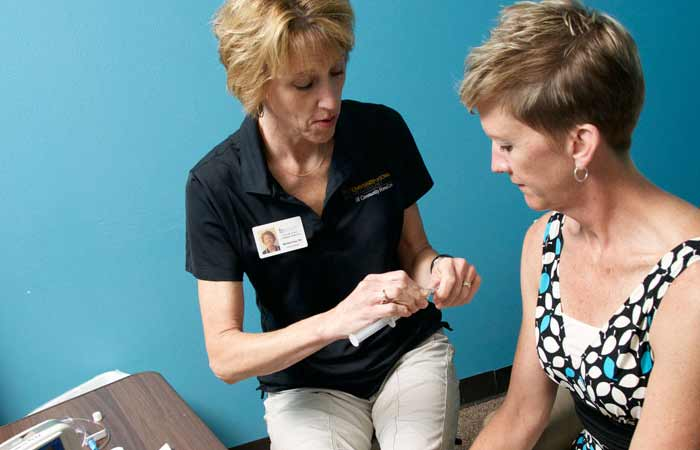

Contact Us
Reach out today to to see if you are eligible for service.

UI Community HomeCare is the affiliated home care company of University of Iowa Health Care. Through our affiliation, we believe we can provide optimal continuity and consistency of care.
Yes. Receiving infusion therapy in the home is really a team effort. The team includes you or your caregiver, the social worker who will help you with the arrangements for home care, and the physician who will prescribe the therapy and follow your progress. The team also includes pharmacists who will monitor your medications, and nurses who will teach you about your therapy.

No. A nurse trained in home infusion will teach you about your therapy and provide assistance until the nurse feels you are able to provide your own care. You and your caregiver are a very important part of the team, and if either of you feels uncomfortable assisting with your therapy, home care may not be the best choice for you.
Not always. Our goal is to utilize the method that will be the safest and easiest for you, and allow you to be as mobile as possible.
No. One nurse will be assigned to coordinate your care so everything will run smoothly. We make every attempt to have the same nurse come as often as possible, however, with varying patient schedules and nurses' days off, we can't always guarantee that the same nurse will visit each time. All of our nurses are highly trained in home care therapies and will be capable of providing the kind of care you need.
Generally, a nurse will make a visit before you ever leave the hospital. He or she will tell you what to expect from your therapy and may show you some of the supplies you will use. Together you will arrange a time for your first visit. The nurse will be as punctual as possible. However, delays because of previous visits, weather, or traffic do occur. You can expect your nurse within a half hour of the arranged time.
Our nurses and pharmacist are available 24 hours a day, 365 days a year for your questions or problems. It is important to remember that if you do have a true medical emergency, you should call 911 rather than your home care nurse.
If your therapy lasts longer than a week, you may need to have additional supplies shipped to you. To make sure you receive the proper supplies, someone from our office will call you and ask what supplies you have left. You can help us by maintaining an accurate count of your supplies on hand. If you are concerned about running short before we call, you may call us at any time.
When your therapy is complete, the nurse may need to make a visit to discontinue your IV, but this depends on the type of IV you have. Your pump and sharps container may be returned by mail if you used them as part of your therapy. By state law, some supplies or drugs cannot be returned once they have been in your home.